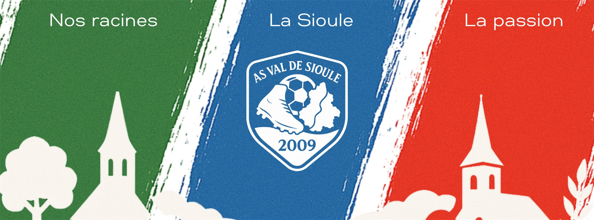

Bienvenue à l'AS Val de Sioule
Né en 2009 de la fusion du FC Étroussat et du BVS de Broût-Vernet, le club fait vivre le football sur trois communes du bocage bourbonnais. Deux équipes séniors, une école de foot, et une bande de bénévoles qui ne compte pas ses heures.
Les prochains rendez-vous
Nos joueurs auront besoin de vous toute l'année. Venez pousser derrière l'équipe, au stade ou en déplacement.
Une histoire de village
Le rouge de Broût-Vernet, le vert d'Étroussat, et entre les deux la Sioule qui coule en bleu : le blason du club raconte à lui seul d'où nous venons. En 2009, deux clubs voisins ont décidé de n'en faire qu'un. Depuis, l'AS Val de Sioule rassemble les familles de Broût-Vernet, d'Étroussat et de Barberier autour d'un même maillot.
Ici, un club n'est pas une structure : c'est un village vivant. Les anciens transmettent, les jeunes s'engagent, et chacun trouve sa place — sur le terrain, à la buvette, à la table de marque ou au bord de la ligne de touche.

Nos équipes
Trois pôles, une même exigence : faire jouer tout le monde et bien accueillir ceux qui arrivent.
Séniors A
Départemental 2. L'équipe fanion, entraînée par Julien Alligier et Sylvain Jaffuel. Demi-finaliste de la Coupe Paul-Baptiste et finaliste du tournoi futsal en 2024-2025.
Séniors B
Départemental 4. La réserve, encadrée par Julien Guillot et Jordan Pinel. Le groupe qui fait jouer tout le monde et ne lâche jamais rien.
École de foot
U7 à U15. En entente avec Chantelle et Ébreuil. Les U13 champions de Division 4 en 2024-2025 et promus à l'échelon supérieur.
Dernières actualités
Quelques chiffres
Nos partenaires
Maillots, panneaux au stade, minibus, ballons : les entreprises du territoire équipent le club au quotidien.
Envie de nous rejoindre ?
Joueur, joueuse, éducateur, arbitre ou simple bonne volonté pour tenir la buvette : le club recrute toute l'année, à tous les âges.